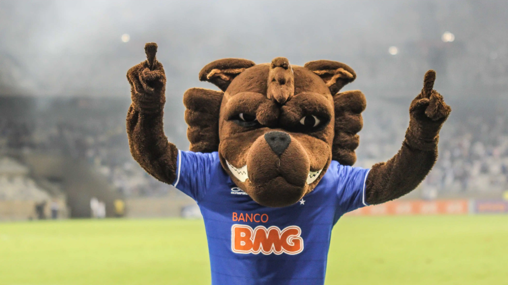

Um pouco mais de História
A SAF do Cruzeiro foi criada em 2021, sendo aprovada por ampla maioria em assembleia do Clube, o ex-jogador Ronaldo Fenômeno adquiriu 90% das ações da SAF, tornando-se o acionista majoritário, porém em 2024 Ronaldo vendeu sua participação da SAF para o empresário Pedro Lourenço, dono da rede se supermercados BH.
Objetivos da SAF
- Recuperar a saúde financeira do clube.
- Reestruturar a gestão e a administração do futebol.
- Retornar o Cruzeiro ao protagonismo no cenário esportivo nacional e internacional.
- Atrair novos investimentos e parceiros.
Hino
O hino oficial foi escrito por Jadir Ambrósio em 1965, ao participar de um concurso na Rádio Incofidência. Na época a diretoria celeste aclamava os compositores mineiros a criarem um hino para o clube celeste que até o momento não tinha o hino.
No ano de 1997, o hino recebeu uma versão com a sonoridade atualizada, com guitarra elétrica e bateria de rock na voz de César Mauricío
No ano de 2004, o hino recebeu uma nova versão, dessa vez na voz de Samuel Rosa.
"Nos gramados de Minas Gerais Temos páginas heroicas e imortais Cruzeiro, Cruzeiro querido Tão combatido, jamais vencido!"
Mascote
O mascote do Cruzeiro é a raposa. Foi desenhada pelo chargista Fernando Pieruccetti no ano de 1945 que se inpirou no atual presidente da época, conhecido por sua esperteza e astúcia no comando dos negócios do clube.
Torcida
A torcida do Cruzeiro também é conhecida como Nação Azul ou China Azul devido à sua imensidão e ao grande crescimento nas últimas décadas. De acordo com o levantamento da AtlasIntel a torcida celeste ocupa o quinto lugar entre as torcidas nacionais.
Conquistas
Abaixo, veja os principais títulos conquistados pelo Cruzeiro
- 2X - Conmebol Libertadores
- 1X - Recopa Sul-Americana
- 2X - Supercopa Libertadores
- 4x - Campeonatos Brasileiros
- 6x - Copas do Brasil
- 38x - Campeonatos Mineiros
Principais artilheiros
- Tostão:242 gols
- Dirceu Lopes: 223 gols
- Niginho: 208 gols
- Bengala: 172 gols
- Marcelo Ramos: 162 gols